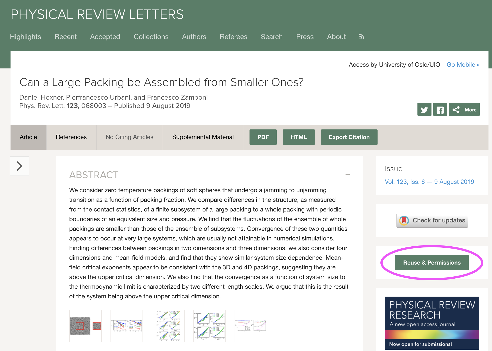

When you are writing your thesis, you may want to reuse materials found in books, papers etc. In addition to referring correctly to theseyou may have to obtain permissions to avoid copyright infringements.
In general, you always need to obtain copyright in order to use materials that other people made. But there are a myriad of exceptions. Perhaps the most important one: There is no copyright on facts. Thus stating a fact that someone else discovered of came up with is fine.
Another exception is that figures only showing data don't need permissions. This for instance applies to most simple plots. But note that as soon as the author has drawn something om top of thte plot, it may be subject to copyright.
Fortunately, it is usually simple to obtain permissions for use.
Figure 3: Example of button to press in order to obtain permissions for reuse of matetrials from Physical Review Letters.

a) Find out how to reuse materials from the following papers on influenza and humidity.
b) Had this paper been publised in 2015, what steps would you have needed to take to reuse matetrials?
| Plagiarism | Copyright infringement |
| Giving the impression that someone else’s work is your own. | Using someone else’s work without their permission. |
| Reasonably easy to avoid by being honest. | Difficult/vague rules. Fair use etc. |
| An ethical construct | A legal construct |
| May get you expelled | May lead to claims for damages |